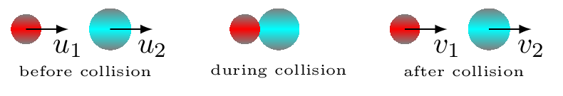
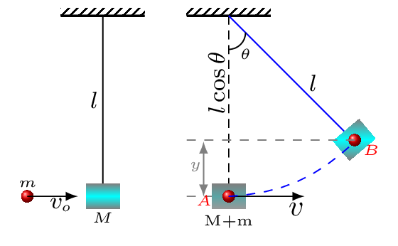

Section 5.4 Impulse and Momentum
The quantity of motion contained in a body is known as momentum. It is defined as the product of mass and velocity of a body. It is a vector quantity.
\begin{equation*}
\vec{p}=m\vec{v}
\end{equation*}
Its unit is \(kg m/s^{2}\) in SI system. The momentum has same direction as velocity of the object. There are two types of momentum, linear momentum and angular momentum. The object moving with a linear velocity, \(v\) has linear momentum and the object spinning with angular velocity, \(\omega\) possesses angular momentum. Here only linear momentum (normally called momentum) is being discussed. The momentum of a system of particles is the sum of the momenta of the individual particles.
\begin{equation*}
\vec{p}_{tot}=\sum_{i} m_{i}\vec{v}_{i}
\end{equation*}
From Newton’s II law of motion, force acting on a particle is the rate of change of momentum and its direction is along that change
\begin{equation*}
\vec{F}_{tot}=\frac{\,\Delta\vec{p}}{\,\Delta t}
\end{equation*}
For a system of particles total force can be,
\begin{equation*}
\vec{F}_{tot}=\sum_{i}\vec{F}_{i}=\sum_{i}\frac{\,\Delta \vec{p}_{i}}{\,\Delta t} = \frac{\,\Delta\vec{p}_{tot}}{\,\Delta t}
\end{equation*}
In this expression
\begin{equation*}
\sum_{i}\vec{F}_{i}=\sum_{i}\vec{F}^{ext}_{i}
\end{equation*}
because the internal forces are Newton’s III law pairs and they are directed along the lines between particles of the system and hence cancel each other out. Therefore, the total force acting on the system is
\begin{equation*}
\vec{F}_{tot} = \sum_{i}\vec{F}^{ext}_{i} =\frac{\,\Delta\vec{p}_{tot}}{\,\Delta t}
\end{equation*}
or,
\begin{equation*}
\vec{F}_{tot} \times \Delta t = \Delta\vec{p}_{tot}
\end{equation*}
A force acting on an object for a certain time changes the momentum of that object, such change in momentum is called Impulse. If total external force acting on a system is zero, then total linear momentum of the system,
\begin{equation*}
\vec{p}_{tot} = constant.
\end{equation*}
This is known as the principle of conservation of momentum. That is
\begin{equation*}
\vec{p}_{tot} =\vec{p}_{i}=\vec{p}_{f}
\end{equation*}
where \(\vec{p}_{i}\) and \(\vec{p}_{f}\) are the initial and final momenta of a system. Momentum conservation is very useful in collision problems because the collision force is internal and hence does not change the total momentum.
The impulse of a collision is the total momentum transferred during the collision, where a collision is an event where a very large force is exerted over a very short time interval \(\Delta t\text{.}\) During that interval magnitude of force is continuously changing, Therefore, the impulse of a force is the product of the average force and the time interval during which the force acts. That is,
\begin{equation*}
\vec{J}=\vec{F}_{av}\,\Delta t=\,\Delta \vec{p}
\end{equation*}
Impulse is a vector quantity and has the same direction as the average force. Unit of impulse is Ns.
Subsection 5.4.1 Collision
A collision is an interaction between two objects that may or may not have made physical contact. In a collision the colliding objects experience a pair of forces acting on them. The direction of the force on the first object is opposite to the direction of the force on the second object and these forces are equal in magnitude. These forces are Newton’s III law pair. In an isolated system, total momentum is always conserved, hence such forces often increase the momentum of one object and decrease the momentum of the other. There are two kinds of collisions, elastic collision and inelastic collision.
Total energy is always conserved in any types of collision. In collision three steps are considered to understand the problems. They are before collision: objects approach each other with a kinetic energy due to their movement, during collision: objects interact and transfer their momentum. The kinetic energy is transformed into elastic potential energy stored in the spring-like molecular bonds, and after collision: the stored elastic potential energy is converted into kinetic energy as the objects move away from each other [Figure 5.4.1].

Here \(u_{1}, \quad u_{2}, \quad v_{1}, \) and \(v_{2}\) are velocities of body 1 and 2 before and after collision, respectively.
Consider two objects of mass \(m_1\) and \(m_2\) having velocity \(u_{1}\) and \(u_{2}\text{,}\) respectively are moving in 1-dimension and that \(u_{1} \gt u_{2}\) so that they collide along their way. Suppose that both objects are subject to zero net force unless they are in contact with one another. During the collision, the first object exerts a large transitory force \(f_{21}\) on the second, whereas the second object exerts an equal and opposite force \(f_{12}=-f_{21}\) on the first. That is, they transfer equal and opposite impulses on one another at the instant of collision. If \(v_{1}\) and \(v_{2}\) are the velocity of the objects after collision, and there is no external force acting on the objects then from the principle of conservation of momentum, we have
\begin{equation*}
p_{before} =p_{after}
\end{equation*}
\begin{equation}
\therefore \quad m_{1}u_{1} +m_{2}u_{2} = m_{1}v_{1}+m_{2}v_{2} \tag{5.4.1}
\end{equation}
This equation is valid for any 1-dimensional collision, irrespective of its nature.
Subsubsection 5.4.1.1 Inelastic Collision
A collision in which total momentum is conserved but the total kinetic energy is not conserved before and after the collision is known as inelastic collision. That is, some of their kinetic energy is converted into heat, or sound, or deformation. If the two objects stick together after the collision and move with a common velocity \(v_{f},\) then the collision is said to be perfectly inelastic. Most collisions in practice are inelastic. Perfectly inelastic collisions usually involve easily deformed obj ects e.g. wet clay. Since momentum is conserved in an inelastic collision eqn. (5.4.1) can help solve the problem. In perfectly inelastic collision, \(v_{1} =v_{2}=v \) after the collision, hence from eqn. (5.4.1), we have -
\begin{equation*}
m_{1}u_{1} +m_{2}u_{2} = \left(m_{1}+m_{2}\right)v
\end{equation*}
Subsubsection 5.4.1.2 Elastic Collision
A collision in which total momentum and total kinetic energy are conserved before and after the collision is known as elastic collision. That is there is no dissipative force acting during the collision and that all of the kinetic energy of the objects before the collision is still in the form of kinetic energy afterward. Any macroscopic collision between objects will convert some of the kinetic energy into internal energy and other forms of energy, so no large scale impacts are perfectly elastic. Elastic collisions usually involve sub-atomic particles or highly rigid objects e.g. steel or glass balls. If both objects have same mass, their velocities swap after perfectly elastic collision, e.g. Newton’s cradle. Collisions in which the objects do not touch each other, such as Rutherford scattering or the slingshot orbit of a satellite off a planet, are elastic collisions. In atomic or nuclear scattering, the collisions are typically elastic because the repulsive Coulomb force keeps the particles out of contact with each other. Collisions in ideal gases are very nearly elastic, and this fact is used in the development of the expressions for gas pressure in a container. Since total momentum and total kinetic energy is conserved in elastic collision, eqn. (5.4.1) along with eqn. (5.4.2) can help solve the problem,
\begin{equation*}
KE_{before} =KE_{after}
\end{equation*}
\begin{equation}
\frac{1}{2}m_{1}u_{1}^{2}+\frac{1}{2}m_{2}u_{2}^{2} = \frac{1}{2}m_{1}v_{1}^{2}+\frac{1}{2}m_{2}v_{2}^{2}\tag{5.4.2}
\end{equation}
and
\begin{equation*}
\therefore \quad m_{1}u_{1} +m_{2}u_{2} = m_{1}v_{1}+m_{2}v_{2}
\end{equation*}
\begin{align}
m_{1}u_{1} +m_{2}u_{2} \amp = m_{1}v_{1}+m_{2}v_{2} \tag{5.4.3}\\
\text{ or, } m_{1}(u_{1}-v_{1}) \amp = m_{2}(v_{2}-u_{2}) \tag{5.4.4}\\
m_{1}u_{1}^{2}+ m_{2}u_{2}^{2} \amp = m_{1}v_{1}^{2}+ m_{2}v_{2}^{2} \tag{5.4.5}\\
\text{ similarly, } m_{1}(u_{1}^2-v_{1}^2) \amp = m_{2}(v_{2}^2-u_{2}^2) \tag{5.4.6}
\end{align}
\begin{align}
\text{ or, } \frac{u_{1}^2-v_{1}^2}{u_{1}-v_{1}} \amp = \frac{v_{2}^2-u_{2}^2}{v_{2}-u_{2} } \tag{5.4.7}\\
\text{ or, } u_{1}+ v_{1} \amp = v_{2}-u_{2} \tag{5.4.8}
\end{align}
\begin{equation}
\text{ or, } v_{2} = u_{1}-u_{2}+v_{1} \tag{5.4.9}
\end{equation}
\begin{align}
m_{1}(u_{1}-v_{1}) \amp = m_{2}(u_{1}-u_{2}+v_{1}-u_{2}) \tag{5.4.10}\\
\text{ or, } m_{1}u_{1}-m_{1}v_{1} \amp = m_{2}u_{1}-2m_{2}u_{2} + m_{2}v_{1} \tag{5.4.11}
\end{align}
\begin{equation}
\therefore v_{1} = \frac{(m_{1}-m_{2})u_{1}+2m_{2}u_{2}}{(m_{1}+m_{2})}\tag{5.4.12}
\end{equation}
Also,
\begin{equation}
\therefore v_{2} = \frac{(m_{2}-m_{1})u_{2}+2m_{1}u_{1}}{(m_{1}+m_{2})}\tag{5.4.13}
\end{equation}
Subsubsection 5.4.1.3 Collision in 2D
A collision in two dimensions obeys the same rules as a collision in one dimension. That is,
- Total momentum in each direction is always the same before and after the collision, and
- Total kinetic energy is the same before and after an elastic collision.
Consider the first object of mass \(m_1\text{,}\) initially moves along the \(x\)-axis with speed \(u_{1}\) and the second object of mass \(m_2\text{,}\) initially moves at an angle \(\theta_i\) to the \(x\)-axis with speed \(u_{2}\text{.}\)
- For inelastic collision: If the two objects stick together and move off at an angle \(\theta_f\) to the \(x\)-axis with speed \(v_f\) [Figure 5.4.2.(a)]. Then from principle of conservation of momentum,\begin{equation} m_{1}u_{1} +m_{2}u_{2}\cos\theta_{i} = (m_{1}+m_{2})v_{f}\cos\theta_{f} \quad [\text{along x-axis}]\tag{5.4.14} \end{equation}\begin{equation} 0 +m_{2}u_{2}\sin\theta_{i} = (m_{1}+m_{2})v_{f}\sin\theta_{f} \quad [\text{along y-axis}]\tag{5.4.15} \end{equation}
- For elastic collision [Figure 5.4.2.(b)]:\begin{equation} m_{1}u_{1} +m_{2}u_{2}\cos\theta_{2i} = m_{1}v_{1}\cos\theta_{1f}+m_{2}v_{2}\cos\theta_{2f} \quad [\text{along x-axis}]\tag{5.4.16} \end{equation}\begin{equation} 0 + m_{2}u_{2}\sin\theta_{2i} = m_{1}v_{1}\sin\theta_{1f}-m_{2}v_{2}\sin\theta_{2f} \quad [\text{along y-axis}]\tag{5.4.17} \end{equation}\begin{equation} \frac{1}{2}m_{1}u_{1}^{2}+\frac{1}{2}m_{2}u_{2}^{2} =\frac{1}{2}m_{1}v_{1}^{2}+\frac{1}{2}m_{2}v_{2}^{2} \tag{5.4.18} \end{equation}
These equations can help sove the 2D collision problems.
Subsubsection 5.4.1.4 Coefficient of Restitution, e
The coefficient of restitution, \(e\) is defined as the ratio of relative speeds after and before an impact, taken along the line of impact. If \(v_{sep}\) represents how fast the objects are separating from one another after collision, and \(v_{app}\) represents how fast the objects are approaching one another before collision, then
\begin{equation*}
e=\frac{v_{sep}}{v_{app}} = e= \frac{\vec{v}_{2f}-\vec{v}_{1f}}{\vec{v}_{1i}-\vec{v}_{2i}}
\end{equation*}
where, \(\vec{v}_{2f}, \quad \vec{v}_{1f}\text{,}\) \(\vec{v}_{2i}, \quad \vec{v}_{1i}\text{,}\) are final and initial velocities of the two particles, respectively. The coefficient of restitution, \(e = 0\) for perfectly inelastic collision and \(e = 1\) for perfectly elastic collision, i.e., \(1\geq e \geq 0\text{.}\)
If the magnitude of the relative velocity does not change during a collision, \(e = 1,\) then the change in kinetic energy is zero. Collisions in which no change in kinetic energy occurs are called elastic collisions, \(\Delta k =0\text{.}\) If the magnitude of the final relative velocity is less than the magnitude of the initial relative velocity, \(e \lt 1,\) then the change in kinetic energy is negative. Collisions in which the kinetic energy decreases are called inelastic collisions, \(\Delta K \lt 0\text{.}\) If the two objects stick together after the collision, then the relative final velocity is zero, \(e = 0.\) Such collisions are called totally inelastic. If the magnitude of the final relative velocity is greater than the magnitude of the initial relative velocity, \(e \gt 1,\) then the change in kinetic energy is positive. Collisions in which the kinetic energy increases are called superelastic collisions, \(\Delta K \gt 0.\)
Subsection 5.4.2 Ballistic Pendulum

From the principle of conservation of momentum,
\begin{equation*}
\text{Momentum before collision = Momentum after collision.}
\end{equation*}
\begin{equation*}
mv_{o}+0 = (M+m)v
\end{equation*}
\begin{equation}
\therefore v=\frac{mv_{o}}{M+m} \tag{5.4.19}
\end{equation}
From the principle of conservation of energy,
\begin{equation*}
E_{A} = E_{B}.
\end{equation*}
\begin{equation*}
\text{or,}\quad \frac{1}{2}(M+m)v^{2}+0=0+(M+m) gy
\end{equation*}
\begin{equation}
\therefore v=\sqrt{2gy} \tag{5.4.20}
\end{equation}
\begin{equation*}
\frac{mv_{o}}{M+m} = \sqrt{2gy}
\end{equation*}
\begin{equation*}
\therefore \quad v_{o} = \left(\frac{M+m}{m}\right)\sqrt{2gy} = \left(1+\frac{M}{m}\right)\sqrt{2gy}
\end{equation*}
But
\begin{equation*}
y=l-l\cos\theta = l(1-\cos\theta).
\end{equation*}
\begin{equation}
\therefore \quad v_{o}=\left(1+\frac{M}{m}\right)\sqrt{2gl(1-\cos\theta)} \tag{5.4.21}
\end{equation}
Where \(v_{o}\) is called the muzzle velocity.